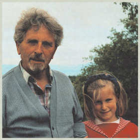
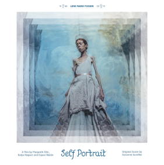
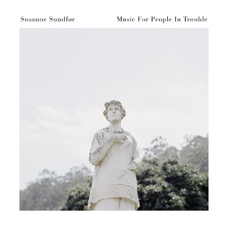
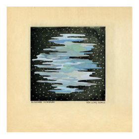
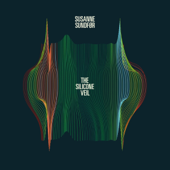
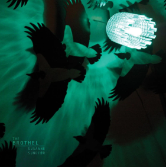
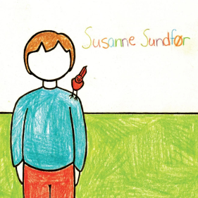

Sussane Sundfør
“I'm as empty as the earth”
Home
Byography
Discography
Live
Contact
Albums
Blomi

1. alyosha
2. náttsǫngr
3. rūnā
4. fare thee well
5. ṣānnu yārru lī
6. orð hjartans
7. blómi
8. leikara ljóð
9. ashera's song
Self Portrait

1. Lene
2. Amor Est Mortis
3. Snøen
4. When The Lord
5. Lys
Music For Poeple In Trouble

1. Mountaineers
2. No One Believes in Love Anymore
3. Good Luck Bad Luck
4. Reincarnation
5. Mantra
6. Bedtime Story
7. Music for People in Trouble
8. The Golden Age
9. Undercover
Ten Love Songs

1. Fade Away
2. Insects
3. Silencer
4. Accelerate
5. Delirious
6. Slowly
7. Kamikaze
8. Darlings
9. Trust Me
The Silicone Veil

1. Diamonds
2. Can You Feel the Thunder
3. White Foxes
4. Your Prelude
5. Rome
6. Stop (Don't Push the Button)
7. Meditation in an Emergency
8. Among Us
9. The Silicone Veil
The Brothel

1. Knight of noir
2. It`s all gone tomorrow
3. Lullaby
4. Lilith
5. Father father
6. O master
7. The Brothel
8. Turkish delight
9. Black widow
10. As I Walked Out One Evening
Sussane Sundfor

1. I Resign
2. The Waves
3. Dear John
4. Walls
5. Gravity
6. Moments
7. The Dance
8. Morocco
9. Torn to Pieces
10. Day of the Titans
11. After you Left
"The greatest danger is ourselves and losing our ability to hold civil conversations".